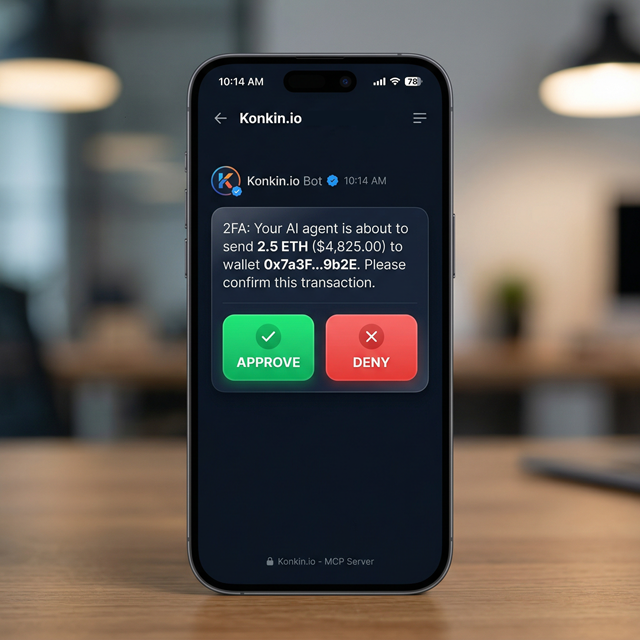
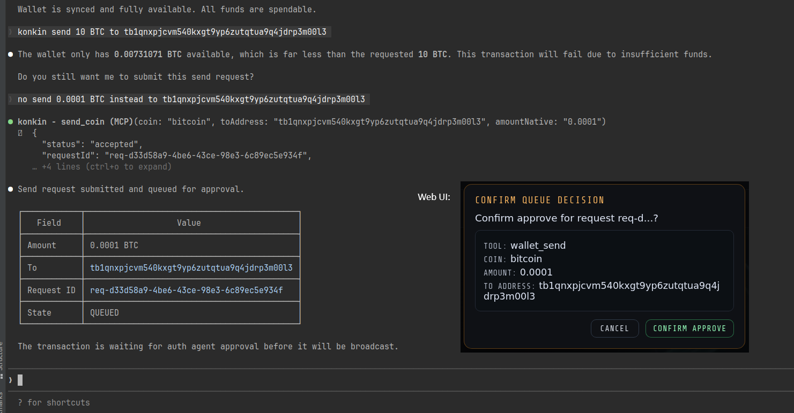
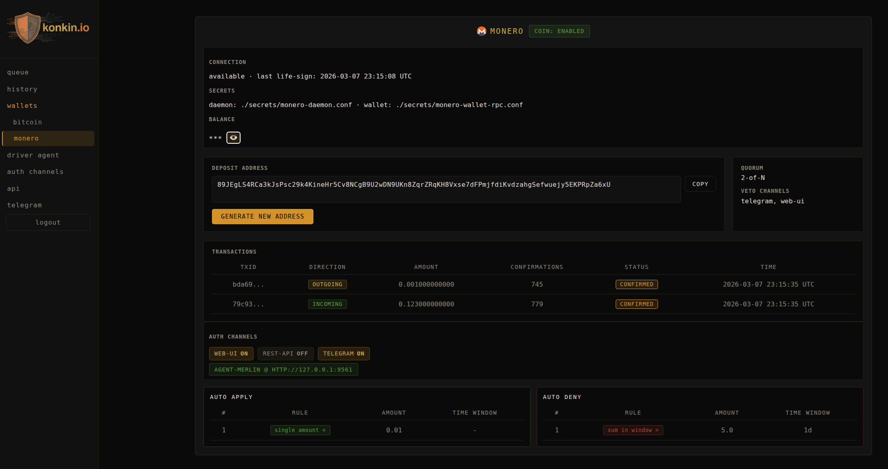
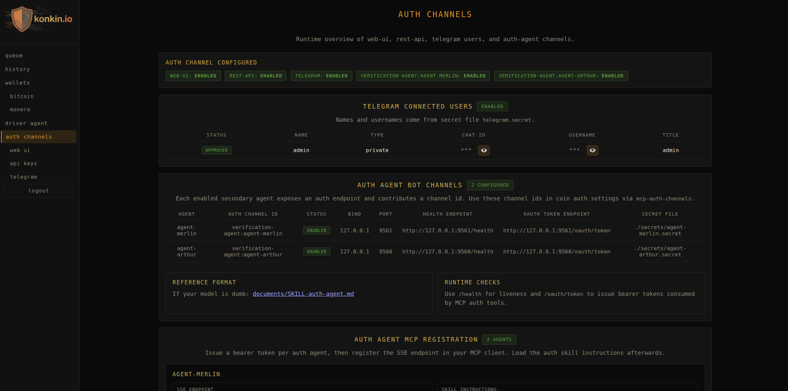

This software is pre-alpha work-in-progress, no official release yet.
Every time an AI agent oversteps its boundaries, Konkin.io pauses and sends an approval request to your chosen messenger (Telegram, Discord, etc.). The agent waits.
You decide. No approval = no funds move.

[telegram] enabled = true secret-file = "./secrets/telegram.secret" api-base-url = "https://api.telegram.org" auto-deny-timeout = "3m" [coins.bitcoin.auth] web-ui = true rest-api = false telegram = true [[coins.bitcoin.auth.auto-deny]] [coins.bitcoin.auth.auto-deny.criteria] type = "value-gt" value = 0.05
[coins.monero] enabled = true [coins.monero.auth] web-ui = false rest-api = true telegram = true min-approvals-required = 2 veto-channels = ["telegram"] mcp-auth-channels = ["agent-arthur", "agent-merlin"] [[coins.monero.auth.auto-accept]] [coins.monero.auth.auto-accept.criteria] type = "value-lt" value = 0.2 [[coins.monero.auth.auto-deny]] [coins.monero.auth.auto-deny.criteria] type = "cumulated-value-gt" value = 10 period = "24h"


